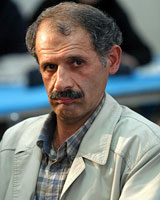

پذيرش > تریبون > گفت و گو > محمد شریف: خواسته های زنان جزء حقوق بنیادین بشر، و حقوق بنیادین کف تمام خواسته (...)


 محمد شریف: خواسته های زنان جزء حقوق بنیادین بشر، و حقوق بنیادین کف تمام خواسته هاست/نیلوفرگلکار محمد شریف: خواسته های زنان جزء حقوق بنیادین بشر، و حقوق بنیادین کف تمام خواسته هاست/نیلوفرگلکار
16 آذر 1386 - - نسخه قابل چاپ
مصاحبه با محمد شریف استاد دانشگاه علامه طباطبایی، وکیل و حقوقدان /نیلوفر گلکار
محمد شریف : فعالیت جنبش زنان در راستای تقویت امنیت عمومی است
*پس از شروع به کار کمپین, بحث حقوقی به طور جدی وارد فعالیتهای جنبش زنان شده است, شما به عنوان یک حقوقدان, به طور کلی عمومی شدن این خواسته ها و نوع برخورد حاکمیت با آن را چگونه ارزیابی می کنید؟
در کشور ما, حاکمیت به موضوع جنبش زنان دید ایدئولوژیک دارد و البته نگرش خاص و در نتیجه معنای خاص خودش را هم از این ایدئولوژی دارد. دید ایدئولوژیک به این معنا که جایگاه زن در جامعه, جایگاهی است که زن در خانه باید بنشیند و خانواده را حفظ کند و مطیع دربست مرد باشد, در مجموع نگرشی که متعلق به قرون پیشین است. این ویژگی نگرشی باعث می شود که هر نوع تحول در نگرش ایدئولوژیک را به مثابه تغییر در مقدسات و غیر قابل تغییر ببیند. این گونه نگرش, نگرش ویژه ای است و متعلق به دوره ای است که به ناچار زن را به عنوان پدیده ای همسان مرد در اجتماع قلمداد نمی کند و الان نیز همان نگرش حاکم است.
واقعیت دیگر آن است که کثرت و تعدد و گسترش مطالبات زنان چون کاملا به حق است مفری است برای سایر اقشار جامعه که برای مطالبه حقوق فردی و آزادی های جمعی بربیایند. اگر این مفر از جنبش دانشجویی, روزنامه نگاری و غیره باز شود, با آن برخورد خشن تری می کنند. در نتیجه خاصیت همه گیر شدن جنبش زنان آنرا مسئله ای حساس می کند. زیرا اگر موضوعی همه گیر شود غیر قابل کنترل می شود. چون مطالبات زنان کاملا مسالمت آمیز و کاملا به حق است مستعد همه گیر شدن است در نتیجه حکومت در مقابل آن می ایستد و تلاش می کند همه گیر نشود. اگر ما به جای یک کمپین 10 و یا 100 کمپین داشته باشیم دیگر با چه کسی می خواهند برخورد کنند؟ مقصود از کمپین مبارزات خیابانی نیست, بلکه مطرح کردن همین خواسته های حقوقی به صورت مسالمت آمیز است که جزء حقوق بنیادین بشریست. اگر صرفا به مورد بازداشت دلارام علی و بازداشت دیگران بپردازیم, می بینیم به هیچ وجه خواست آنان براندازی و غیره نیست بلکه تنها خواست آنان این بوده که بگویند ما انسانیم و باید یکسان با ما برخورد شود, ما می خواهیم هر وقت شوهر کردیم ابزار دست شوهر نباشیم. این خواسته ها, خواسته های برحقی است و به موازات گسترش آنها, کنترل حکومت نیز بیشتر می شود.
کاری که جنبش زنان در پیش گرفته یعنی طرح خواسته تغییر قوانین, کاری است که حقوقدان ها آن را به لحاظ حقوقی امکان پذیر می دانند. شما چقدر این را عملی می بینید؟ آیا در چارچوب قوانین کنونی می توان این اصلاحات را به نفع عموم جامعه به دست آورد؟
دو مشکل بر سر راه است, یکی مشکل شکلی و دیگر ماهوی است. مسئله شکلی در کشور ما به این ترتیب است که اصلاح قوانین مد نظر ما باید توسط نمایندگان مردم صورت بگیرد. در حالی که نمایندگان کسانی هستند که شورای نگهبان از طریق نظارت استصوابی آنها را انتخاب کرده باشد و بعد مردم آنها را انتخاب کنند. یعنی در مرحله اول نمایندگان باید به گونه ای عمل کنند که رضایت شورای نگهبان را به دست آورند و در درجه دوم رضایت مردم را. اگر نمایندگان بدانند که انتخابشان در دست مردم است, ناچارند آنها را راضی نگه دارند و در این حالت در برابر آنها پاسخ گویند. اما این مسئله به دلیل انتخاب دو مرحله ای زیر سوال است. پس نمایندگان به گونه ای عمل می کنند که دوباره بتوانند کاندیدا شوند. پس اگر سوال این باشد که آیا جنبش زنان از این طریق پیش خواهد رفت؟ پاسخ آن است که از طریق کدام پارلمان؟ زیرا دغدغه اول نمایندگان آن است که, چه کنم که تایید صلاحیت شوم, نه آنکه چه کنم که مردم مرا انتخاب کنند.
مشکل بعدی مشکل ماهوی است, مبنای خواسته زنان برحق و مشروع است, البته نه براساس آن دید ایدئولوژیکی که در سوال قبل مطرح شد. فرهنگ عمومی جامعه آمادگی پذیرش خواسته زنان را دارد. زیرا اقشار عمومی جامعه، به جز تعداد کمی، زنان و مردان را برابر حساب می کنند. در نتیجه این خواسته ها برحق است, زیرا دید عموم جامعه می گوید که چه چیز عادلانه است. اما از آنجا که باید از طریق پارلمان کنونی حل شوید می رسیم به معضلی که دیگر خاص زنان نیست و مشکل کل کسانی است که خواسته ای را پیگیری می کنند.
*خواسته های جنبش زنان کاملا مشخص است, مثلا در قالب کمپین 11 مساله حقوقی مشخص را دنبال می کند, اما در یک سال گذشته هر چه به سمت شفاف سازی فعالیت های قانونی مان پیش رفته ایم, فشار نیز شدید تر شده, مثلا دلارام علی که در تجمعی که بر اساس اصل 27 قانون اساسی مجاز بود , دستگیر شد و به دو سال و شش ماه حبس محکوم شد یا مریم حسین خواه و جلوه جواهری به جرم نشر اکاذیب اکنون در زندان اند است و یا حتا در منزل اگر جلسات کوچک 5, 6 نفره داریم , پلیس می آید و سپس ما با اتهاماتی نظیر اقدام علیه امنیت ملی و بر هم زدن نظم عمومی و غیره متهم می شویم. آیا این حکم ها با توجه به رویه شفاف و قانونی کمپین ادله حقوقی دارد؟ اگر نه مسئولان چرا اینگونه رفتار می کنند؟
پاسخ این سوال مبتنی بر این است که شما چه تعریفی از امنیت ملی دارید. امنیت عمومی در دانش حقوق یعنی امنیت اجتماعی, یعنی اگر شما پلیس می بینید احساس امنیت کنید. اما آیا نگرش به امنیت این است که شما مهمانی کوچک 5و6 نفره دارید پلیس به در خانه شما بیاید؟ این امنیت ملی است؟ خیر, بلکه نگرشی که موجب این رویدادها می شود نگرشی است که امنیت ملی را امنیت قدرت حکومتی می داند. در حالی که فعالیت جنبش زنان را اگر با تعریف واقعی امنیت ملی نگاه کنیم, درواقع در راستای تقویت امنیت عمومی است. بدون تردید چنانچه مطالبات بر حق زنان به صورت مسالمت آمیز پیش برود و زنان به آن بخش اندک جامعه تفهیم کنند که ما انسان هستیم پس باید با ما مثل یک انسان رفتار شود, برای مثال در مسئله نکاح برابر باشیم و در مسئله طول مدت زناشویی و انحلال نکاح نیز برابر باشیم. این خواسته ها با امنیت ملی در واقع گره خورده است. زیرا باعث تحکیم خانواده می شود. در جامعه ما فاصله بین فقر و غنا مانند دره ای است و با مثل شلوار که دو تا شد می توان نتایج را توضیح داد. زیرا بر حسب قانون در این حالت مرد بسیار راحت زن اول خود را بدبخت می کند و زن دیگری می گیرد و... در این حالت بنیاد خانواده متزلزل شده و در واقع این اقدام علیه امنیت ملی است. حال آنکه مطالبات زنان در راستای برابری زن و مرد است که منجر به تحکیم بنیاد خانواده می شود. اگر همین قوانین ازدواج و طلاق برابر شود, بنیاد خانواده به سمت استحکام خواهد رفت. زیرا در طلاق متضرر همواره زن است. در آخر زن به آنجا می رسد که می گوید آقا مهرم را نمی خواهم یک پولی هم می دهم طلاقم بده. به اصطلاح مهرم حلال, جونم آزاد. اگر قانون این قدرت را به مرد نمی داد که کار به اینجا نمی کشید. و قدرت همیشه فریبنده است و اگر زوال پیدا کند قطعا بنیاد خانواده استوارتر خواهد شد. که این در راستای تقویت امنیت عمومی است.
*نظرشما راجع به لایحه حمایت از خانواده یا آنگونه که مرسوم شده ضد خانواده چیست؟ زیرا در یک بند آن می بینیم به مرد اجازه ازدواج دوم بدون کسب اجازه همسر اول را می دهد و در بندی دیگر مالیات بر مهریه می بندد.
در شکل عمومی این لایحه به سویی پیش می رود که تنها سلاح زن در برابر ازدواج دوم مرد که مهریه است را از او می گیرد. مسئله این است که تدوین کنندگان قانون فکر می کنند که اگر مهریه را از زن بگیرند, آمار طلاق پایین می آید. یعنی وقتی مرد خواست زن دیگری بگیرد, زن اول نتواند مهریه را به اجرا بگذارد و طلاق بگیرد. اما در حالت کلی اگر سیر قانون را از سال 1340 تا کنون نگاه کنیم تا یک جا سیر صعودی داشته و از آن به بعد همواره نزولی بوده. چه در مسئله زنان چه موجر و مستاجر و ... پس این مسئله خاص زنان نیست. زیرا از دوره ای به بعد حرکت از جامعه بیرون کشیده شد و برخی مفاهیم عوض شدند. به عنوان مثال کسی به وزیر و نماینده مجلس نمی گوید آدم سیاسی, اما به مردم عادی که به دنبال احیای حقوق خود هستند می گویند سیاسی, که بار منفی دارد. یا مثلا در دانشگاه وقتی سهمیه های مختلف زیاد می شود, از سهمیه مردم عادی کم می کنند, در حالی که در اصل حق جامعه است و این نشان می دهد که این سیر نزولی در همه جنبه های حقوقی بوده و مختص زنان نیست.
* آیا به نظر شما دولت لایحه خانواده را در مقابل کمپین یک میلیون امضا عنوان کرده؟
من در این مورد فکر نکرده ام اما به طور کلی همان گونه که گفتم اتفاقی است که در همه جنبه های جامعه دارد می افتد.
در مقابل حرکات مسالمت آمیز جنبش زنان سرکوب شدیدتر شده به نظر شما دلیل آن چیست و چه کار می توان کرد؟
اگر تاریخ را نگاه کنیم می بینیم که همیشه سرکوب مقطعی است. به دلیل موقعیت های خاص که در این مقاطع رخ داده, حکومت در پی ارعاب و از بین بردن ابتکارات بر آمده است و الان هم مسائل هسته ای می تواند در اعمال فشار موثر باشد. اما من حرکتی مسالمت آمیز تر از جمع کردن امضا برای بیان خواسته ها نمی بینم. اگر شما حرکتی مسالمت آمیزتر هم پیدا کردید آن کار را بکنید.
* سوال آخر این که شما وظیفه مردم و جنبش های دیگر را در مقابل جنبش زنان که فعالان آن با دادگاه ها و احکام متعددی رو به رو هستند چه می بینید؟
به طور خلاصه می توان گفت خواسته های زنان جزء حقوق بنیادین بشر است.که همان برابری بین انسان ها است. پس اگر همه به حقوق بنیادین معتقدند, برای رسیدن و مطرح کردن حقوق خودشان هم که شده, حتا اگر مربوط به زنان نباشد, باید ابتدا از جنبش زنان حمایت کنند. زیرا حقوق بنیادین کف تمام خواسته ها قرار می گیرد.
ارسال به
بالاترین
،
توییتر
،
فریندفید
،
فیسبوک
در همين بخش :
 دهمین دورۀ مراسم تندیس صدیقه دولت آبادی ۱۳۹۲ دهمین دورۀ مراسم تندیس صدیقه دولت آبادی ۱۳۹۲
کارت پستالهایی به بهانهی هشت مارس و به یاد همهی مبارزین راه برابری
بیانیه بیش از 350 تن از مدافعان حقوق زنان به مناسبت روز جهانی زن؛ زنان هر روز فرودستتر میشوند
لباسی که برای تن ما دوخته اند! /اعظم بهرامی
چالشها و چشمانداز فعالیت مدنی زنان
ديگر بخش ها :
طرح یک میلیون امضا
|
مقالات
|
سایت نوشته ها
|
اخبار
|
گزارش كمپين
|
گفت و گو
|
علیه سکوت
|
كوچه به كوچه
|
نامه های شما
|
گزارش ویژه
|
گفتگو با اعضا
|
ویژه سالگرد کمپین
|
تصویر برابری
|
دل آرام علی
|
تریبون
|
مقالات
|
تاریخ شفاهی
|
خارج از چارچوب
|
کتابخانه
|
درباره کمپین
|
کمپین در شهرها
|
کمپین در بند
|
صدای تغییر
|
ویژه 22 خرداد
|
لایحه حمایت از خانواده
|
گالری
|
عشا مومنی
|
امیر یعقوبعلی
|
خدیجه مقدم
|
راحله عسگری زاده و نسیم خسروی
|
پروین اردلان،جلوه جواهری، مریم حسین خواه، ناهید کشاورز
|
زینب پیغمبرزاده
|
سعیده امین، سارا ایمانیان، محبوبه حسین زاده، ناهید کشاورز و همایون نامی
|
احترام شادفر
|
نسیم سرابندی زاده،فاطمه دهدشتی
|
وبلاگ مهمان
|
پرونده خرم آباد
|
دستگیری ها
|
مریم مالک
|
پرستو اللهیاری
|
مهرنوش اعتمادی
|
سمیه رشیدی
|
Other Languages
|
همراهان
|
«فراخوان کمپین ده روز با بهاره هدایت»
| English
|